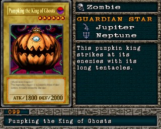

#099 · Monstro
Pumpking the King of Ghosts
ATK1800
DEF2000
Nível6
TipoZumbi
AtributoDark
Guardian StarsJúpiter / Netuno
Senha29155212
Star Chips500
Quem dropa no Mod 13
| Duelista | Rank | Chance | Média | |
|---|---|---|---|---|
| B/C/D | 3,71% 76/2048 | 1 em 27 duelos | ||
| S/A-POW | 3,61% 74/2048 | 1 em 28 duelos | ||
| S/A-POW | 2,34% 48/2048 | 1 em 43 duelos | ||
| B/C/D | 2,34% 48/2048 | 1 em 43 duelos | ||
| S/A-POW | 2,34% 48/2048 | 1 em 43 duelos | ||
| B/C/D | 2,34% 48/2048 | 1 em 43 duelos | ||
| S/A-POW | 1,66% 34/2048 | 1 em 60 duelos | ||
| B/C/D | 1,66% 34/2048 | 1 em 60 duelos | ||
| S/A-POW | 1,17% 24/2048 | 1 em 85 duelos | ||
| B/C/D | 1,17% 24/2048 | 1 em 85 duelos | ||
| S/A-POW | 1,17% 24/2048 | 1 em 85 duelos | ||
| B/C/D | 1,07% 22/2048 | 1 em 93 duelos | ||
| S/A-POW | 0,88% 18/2048 | 1 em 114 duelos | ||
| B/C/D | 0,88% 18/2048 | 1 em 114 duelos | ||
| S/A-POW | 0,78% 16/2048 | 1 em 128 duelos |
Quem dropa no jogo original
| Duelista | Rank | Chance | Média | |
|---|---|---|---|---|
| B/C/D | 3,71% 76/2048 | 1 em 27 duelos | ||
| S/A-POW | 3,61% 74/2048 | 1 em 28 duelos | ||
| S/A-POW | 2,34% 48/2048 | 1 em 43 duelos | ||
| B/C/D | 2,34% 48/2048 | 1 em 43 duelos | ||
| S/A-POW | 2,34% 48/2048 | 1 em 43 duelos | ||
| B/C/D | 2,34% 48/2048 | 1 em 43 duelos | ||
| S/A-POW | 1,66% 34/2048 | 1 em 60 duelos | ||
| B/C/D | 1,66% 34/2048 | 1 em 60 duelos | ||
| S/A-POW | 1,17% 24/2048 | 1 em 85 duelos | ||
| B/C/D | 1,17% 24/2048 | 1 em 85 duelos | ||
| S/A-POW | 1,17% 24/2048 | 1 em 85 duelos | ||
| B/C/D | 1,07% 22/2048 | 1 em 93 duelos | ||
| S/A-POW | 0,88% 18/2048 | 1 em 114 duelos | ||
| B/C/D | 0,88% 18/2048 | 1 em 114 duelos | ||
| S/A-POW | 0,78% 16/2048 | 1 em 128 duelos |
A chance vale por duelo vencido com o rank indicado. "1 em N" é a média de duelos para conseguir a carta. S/A-POW = vitória por força; S/A-TEC = vitória técnica; B/C/D = ranks baixos.